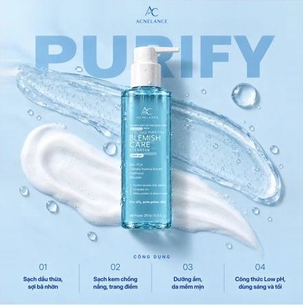
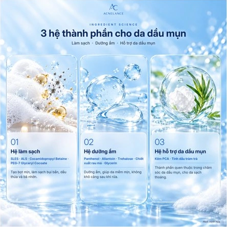

PREPARE
Làm ướt mặt
Dùng nước làm ướt da mặt và lòng bàn tay
SCIENCE OF BALANCE / VIETNAM
Acnelance đồng hành cùng da dầu mụn bằng cách chăm sóc khoa học, bắt đầu từ bước làm sạch vừa đủ

Acnelance là thương hiệu Việt dành cho da dầu mụn, với cách tiếp cận khoa học, bình tĩnh và minh bạch
Chúng tôi bắt đầu từ bước làm sạch vừa đủ, giúp bạn hiểu làn da và chủ động xây dựng cách chăm sóc phù hợp
Sữa rửa mặt hỗ trợ ngừa mụn cho da dầu mụn
Kết cấu gel trong tạo bọt mịn, giúp làm sạch dầu thừa, bụi bẩn và sợi bã nhờn trong bước chăm sóc mỗi ngày
Xem chi tiết & mua sắm↗Mỗi làn da có thể có cảm nhận khác nhau
Tìm hiểu vai trò của ba nhóm thành phần trong công thức làm sạch và chăm sóc da dầu mụn

HÌNH MINH HỌASLES · ALS · Cocamidopropyl Betaine
Tạo bọt, làm sạch bụi bẩn, dầu thừa và bã nhờn trên bề mặt da
Panthenol · Allantoin · Trehalose
Các thành phần dưỡng ẩm trong công thức chăm sóc da hằng ngày
Zinc PCA · Chiết xuất rau má
Kẽm PCA hỗ trợ làm sạch dầu thừa và bã nhờn; danh sách thành phần đầy đủ được ghi trên bao bì
Thêm nước vào một lượng gel vừa đủ, xoa nhẹ trong lòng bàn tay để tạo bọt trước khi làm sạch da
Kết cấu gel trong, dễ tán đều trong lòng bàn tay
Xem cách sử dụng ↓Làm sạch bằng những chuyển động nhẹ, tránh chà xát mạnh để chăm sóc da một cách vừa đủ
Dùng nước làm ướt da mặt và lòng bàn tay
Cho sản phẩm ra lòng bàn tay, thêm nước
Xoa nhẹ trong lòng bàn tay để tạo bọt
Mát xa 20–30 giây, sau đó rửa sạch
Chỉ dùng ngoài da, tránh tiếp xúc với mắt và ngừng sử dụng nếu xuất hiện kích ứng
Tìm câu trả lời về sản phẩm, thành phần và cách lựa chọn Acnelance cho làn da của bạn
Acnelance tập trung vào nhu cầu chăm sóc da dầu mụn; Purifying Blemish Care Cleanser là sản phẩm làm sạch thuộc dòng Purifying
Đây là mỹ phẩm làm sạch dầu thừa, bụi bẩn và sợi bã nhờn, không phải thuốc và không thay thế thuốc điều trị
Bạn có thể xem danh sách thành phần đầy đủ trên bao bì; website giới thiệu các nhóm thành phần chính theo tài liệu thương hiệu
Bạn có thể trải nghiệm cửa hàng, giỏ hàng và thanh toán mẫu; giá bán chính thức và chức năng nhận đơn thực tế đang được hoàn thiện